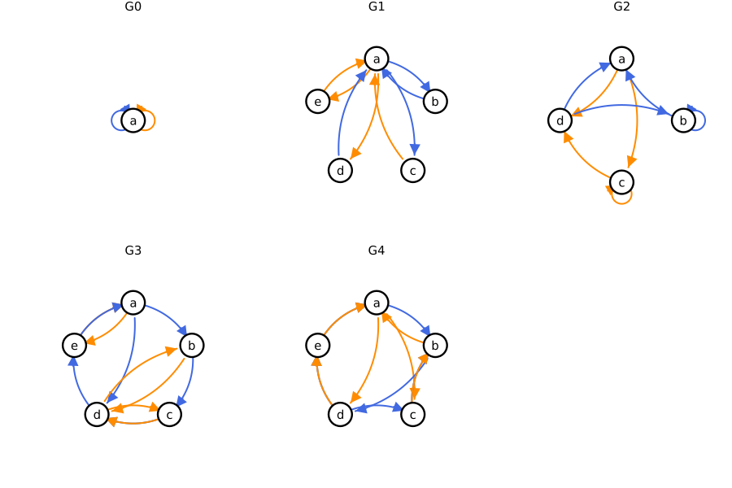
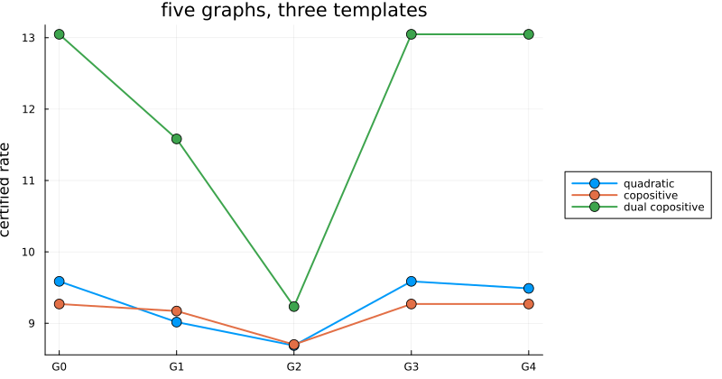

Compare two graphs
Before solving on a bigger graph, ask whether it can pay off at all. compare answers for every system at once, without solving, and the answer depends on the template: on the five graphs of (Debauche et al., 2023), a five-node graph can beat the one-node graph for quadratic forms, and never for the copositive templates. Comparing graphs explains the method; this page runs it.
import PathCompleteCertificates as PCC
import Clarabel
using Plots
const OPTIMIZER = Clarabel.OptimizerFive graphs
The graphs of the paper, on two modes, built with empty_graph and add_edge!. The paper names the nodes a to e, and so does this page.
function build(n_nodes, edges)
graph = PCC.empty_graph(n_nodes)
for (a, b, mode) in edges
PCC.add_edge!(graph, a, b, mode)
end
return graph
end
G0 = build(1, [(1, 1, 1), (1, 1, 2)])
G1 = build(
5,
[
(1, 2, 1),
(2, 1, 1),
(1, 3, 1),
(3, 1, 2),
(1, 4, 2),
(4, 1, 1),
(1, 5, 2),
(5, 1, 2),
],
)
G2 = build(
4,
[
(1, 3, 2),
(1, 4, 2),
(2, 1, 1),
(2, 2, 1),
(3, 3, 2),
(3, 4, 2),
(4, 2, 1),
(4, 1, 1),
],
)
G3 = build(
5,
[
(1, 2, 1),
(1, 5, 2),
(1, 4, 1),
(2, 3, 1),
(2, 4, 2),
(3, 4, 1),
(3, 4, 2),
(4, 3, 2),
(4, 2, 2),
(4, 5, 1),
(5, 1, 1),
(5, 1, 2),
],
)
G4 = build(
5,
[
(1, 2, 1),
(2, 4, 1),
(3, 2, 1),
(4, 3, 1),
(4, 5, 1),
(5, 1, 1),
(1, 4, 2),
(1, 3, 2),
(2, 1, 2),
(3, 2, 2),
(4, 5, 2),
(5, 1, 2),
],
)
GRAPHS = [G0, G1, G2, G3, G4]
NAMES = ["G0", "G1", "G2", "G3", "G4"]
node_name(k) = string('a' + k - 1)
Blue edges read mode 1, orange edges mode 2.
All five are path-complete; G0, G3 and G4 are also complete and co-complete, G1 and G2 neither:
satisfying(predicate) = [name for (name, g) in zip(NAMES, GRAPHS) if predicate(g, 1:2)]
(
path_complete = satisfying(PCC.is_path_complete),
complete = satisfying(PCC.is_complete),
co_complete = satisfying(PCC.is_co_complete),
)(path_complete = ["G0", "G1", "G2", "G3", "G4"], complete = ["G0", "G3", "G4"], co_complete = ["G0", "G3", "G4"])One comparison
compare(G1, G2) asks whether G2 is at least as good as G1. Given templates and the system they will be read on, it also says for which of them the order holds. The system is the paper's, positive, so that the copositive templates apply; divided by 10 and rounded, it is the running example of the manual.
A = [[1.5519 0.44737; 7.6412 7.4716], [0.47501 9.1755; 1.8955 0.18502]]
system = PCC.switched_system(A)
problem = PCC.StabilityProblem(system)
QUADRATIC = PCC.QuadraticTemplate()
TEMPLATES = [
"quadratic" => QUADRATIC,
"copositive" => PCC.LinearCopositiveTemplate(),
"dual copositive" => PCC.DualCopositiveTemplate(),
]A comparison, read by name: the lifts whose lifted first graph simulates the second, and the templates for which the order is proved. The max lift is the dual of the min lift.
compared(G, H) =
PCC.compare(G, H; templates = last.(TEMPLATES), system, optimizer = OPTIMIZER)
lift_name(lift) =
lift isa PCC.MinLift ? "min" :
lift isa PCC.MaxLift ? "max" :
lift isa PCC.SumLift ? "sum" : string(nameof(typeof(lift)))
outcome(c) = (
simulating = lift_name.(first.(PCC.simulations(c))),
proved_for = [
name for (name, template) in TEMPLATES if any(t -> t === template, PCC.templates(c))
],
)
c12 = compared(G1, G2)
outcome(c12)(simulating = ["min", "max", "sum"], proved_for = ["quadratic", "copositive", "dual copositive"])No plain simulation exists, since G2 has a self-loop and G1 has none, the paper's Example 1. But the min, max and sum lifts of G1 simulate G2, so G2 is at least as good for the three templates.
The sum lift's simulation is also a recipe: a nonnegative integer matrix $C$ such that $W = C\,V$ is a certificate on G2 whenever $V$ is one on G1 ((Debauche et al., 2023), Thm. 2). Read row by row:
C = Dict(PCC.simulations(c12))[PCC.SumLift()]
combination(row) = join(
[(c == 1 ? "" : "$c·") * "V_" * node_name(g) for (g, c) in enumerate(row) if c > 0],
" + ",
)
["W_" * node_name(h) * " = " * combination(C[h, :]) for h in 1:PCC.n_nodes(G2)]4-element Vector{String}:
"W_a = V_a + V_c"
"W_b = V_a + V_b"
"W_c = V_a + V_e"
"W_d = V_a + V_d"Following the recipe on a certificate solved on G1, every edge inequality of G2 holds at the same rate:
bound(template, graph) =
PCC.certify(template, graph, problem; optimizer = OPTIMIZER, initial_upper = 100.0)
on_G1 = bound(QUADRATIC, G1)
V = PCC.functions(on_G1)
W = [
PCC.QuadraticFunction(sum(C[h, g] * V[g].Q for g in eachindex(V))) for
h in 1:PCC.n_nodes(G2)
]
scale = on_G1.rate^PCC.homogeneity_degree(QUADRATIC)
all(PCC.edges(G2)) do edge
return PCC.decrease_slack(
QUADRATIC,
W[PCC.source(edge)],
W[PCC.dest(edge)],
A[PCC.label(G2, edge)];
scale,
) >= -1e-6
endtrueThe template decides
G4 against the one-node graph: its min and max lifts simulate G0, its sum lift does not. So G4 gives no better certificate than G0 for the templates for which the min or the max lift is valid, here the two copositive ones, but may for the quadratic template:
c40 = compared(G4, G0)
outcome(c40)(simulating = ["min", "max"], proved_for = ["copositive", "dual copositive"])G3, with as many nodes and edges, is no better than G0 for any template for which the sum lift is valid: its sum lift simulates G0, with a single row, $2V_a + V_b + V_c + 2V_d + 2V_e$, a common function of any certificate on G3.
c30 = compared(G3, G0)
Dict(PCC.simulations(c30))[PCC.SumLift()]1×5 Matrix{Int64}:
2 1 1 2 2The rates agree
The orders hold for every system; on the paper's system, the certified rates follow them. The quadratic rate drops from G1 to G2, is the same on G3 as on G0, and is lower on G4; the copositive rates are the same on G0, G3 and G4.
rates = Dict(
name => [bound(template, g).rate for g in GRAPHS] for (name, template) in TEMPLATES
)
figure = plot(;
xticks = (1:5, NAMES),
ylabel = "certified rate",
legend = :outerright,
size = (800, 420),
title = "five graphs, three templates",
)
for (name, _) in TEMPLATES
plot!(figure, 1:5, rates[name]; marker = :circle, markersize = 6, lw = 2, label = name)
end
figure
The min, max and sum lifts were never built: a relation decides the first two, and a linear program the third, while these lifted graphs grow exponentially. Only the composition lifts, of length 1, are built. Improve my bound builds a better graph instead of comparing given ones.
This page was generated using Literate.jl.